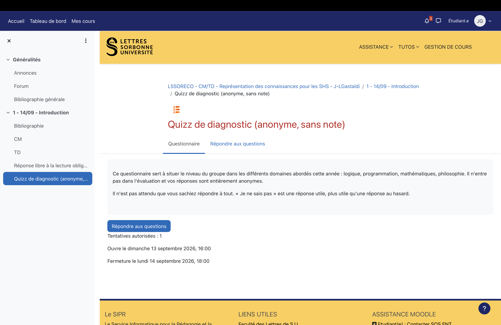

L5SORECOSemestre 5 · 2026/2027

Représentation des connaissances
pour les SHS
Juan Luis (Gianni) Gastaldi
TD 1
Introduction
14/09/2026
Discussion
Environnement de programmation
Environnement de programmation
- Python
- Jupyter
- Environnements virtuels
- IDE (e.g., VS Code)
Quiz de diagnostic
Quiz de diagnostic (anonyme, sans note)

Exercice d’introduction
Logigramme
Logigramme A
- La personne qui a commandé des capellini a payé moins cher que celle qui a choisi la sauce arrabiata
- La personne qui a commandé des tagliolini a payé plus cher qu’Angie
- La personne qui a commandé des tagliolini a payé moins cher que celle qui a choisi la sauce marinara
- Claudia n’a pas choisi la sauce puttanesca
- La personne qui a commandé des rotini est soit celle qui a payé 8 $ de plus que Damon, soit celle qui a payé 8 $ de moins que Damon
- La personne qui a commandé des capellini est soit Damon, soit Claudia
- La personne qui a choisi la sauce arrabiata est soit Angie, soit Elisa
- La personne qui a choisi la sauce arrabiata a commandé des farfalle
Logigramme B
- Mattie a 113 ans
- La personne qui a 111 ans n’habite pas à Plymouth
- La personne qui habite à Shaver Lake a un an de moins que Roxanne
- La personne qui habite à Zearing n’est pas originaire d’Alaska
- Roxanne a deux ans de moins que la personne originaire du Kansas
- Parmi la personne qui habite à Tehama et Mattie, l’une est originaire d’Alaska et l’autre du Kansas
- Le centenaire qui habite à Plymouth n’est pas originaire d’Alaska
- La personne originaire de Washington a un an de plus qu’Ernesto
- La personne qui habite à Tehama est originaire soit du Kansas, soit de l’Oregon
- La personne originaire de l’Oregon est soit Zachary, soit la personne qui habite à Tehama
Logigramme A
- La personne qui a commandé des capellini a payé moins cher que celle qui a choisi la sauce arrabiata
- La personne qui a commandé des tagliolini a payé plus cher qu’Angie
- La personne qui a commandé des tagliolini a payé moins cher que celle qui a choisi la sauce marinara
- Claudia n’a pas choisi la sauce puttanesca
- La personne qui a commandé des rotini est soit celle qui a payé 8 $ de plus que Damon, soit celle qui a payé 8 $ de moins que Damon
- La personne qui a commandé des capellini est soit Damon, soit Claudia
- La personne qui a choisi la sauce arrabiata est soit Angie, soit Elisa
- La personne qui a choisi la sauce arrabiata a commandé des farfalle
Logigramme B
- Mattie a 113 ans
- La personne qui a 111 ans n’habite pas à Plymouth
- La personne qui habite à Shaver Lake a un an de moins que Roxanne
- La personne qui habite à Zearing n’est pas originaire d’Alaska
- Roxanne a deux ans de moins que la personne originaire du Kansas
- Parmi la personne qui habite à Tehama et Mattie, l’une est originaire d’Alaska et l’autre du Kansas
- Le centenaire qui habite à Plymouth n’est pas originaire d’Alaska
- La personne originaire de Washington a un an de plus qu’Ernesto
- La personne qui habite à Tehama est originaire soit du Kansas, soit de l’Oregon
- La personne originaire de l’Oregon est soit Zachary, soit la personne qui habite à Tehama
Prochain cours: Logique propositionnelle
Lecture obligatoire:
Lifschitz, V., Morgenstern, L., & Plaisted, D. (2008). Chapter 1: Knowledge Representation and Classical Logic. In F. van Harmelen, V. Lifschitz, & B. Porter (Eds.), Handbook of Knowledge Representation (pp. 3–88). Elsevier.
Sélection: §1.1, 1.2.1, 1.3.1
Envoyez votre réponse libre!
Lecture recommandée:
Desclès, J.-P., Djioua, B., & Le Priol, F. (2010). Logique et langage: Déduction naturelle. Hermann.
Sélection: §1.4, 1.5, 2.1-2.5
Gianni Gastaldi | L5SORECO TD